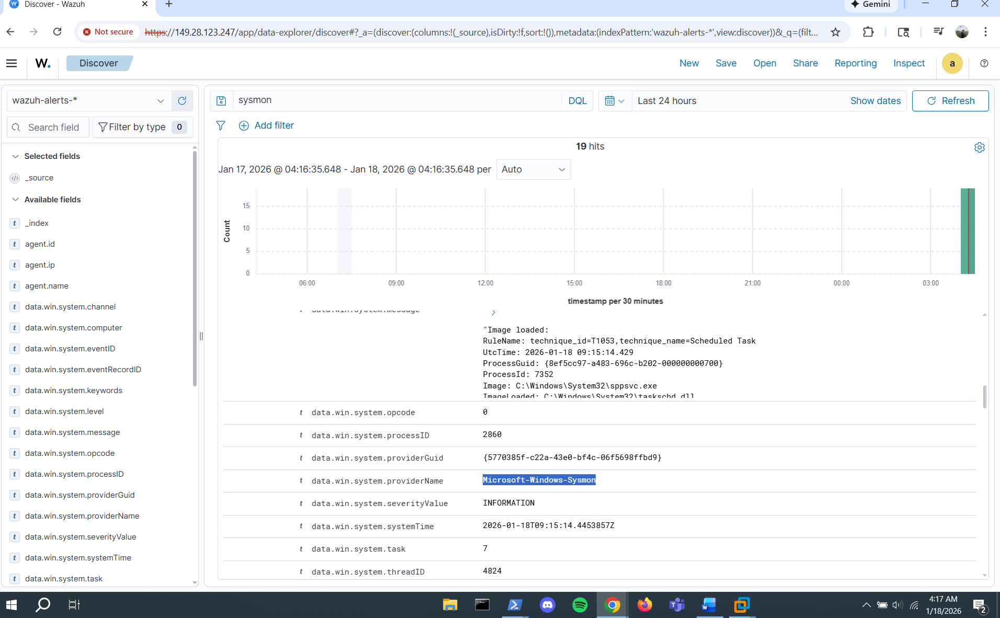
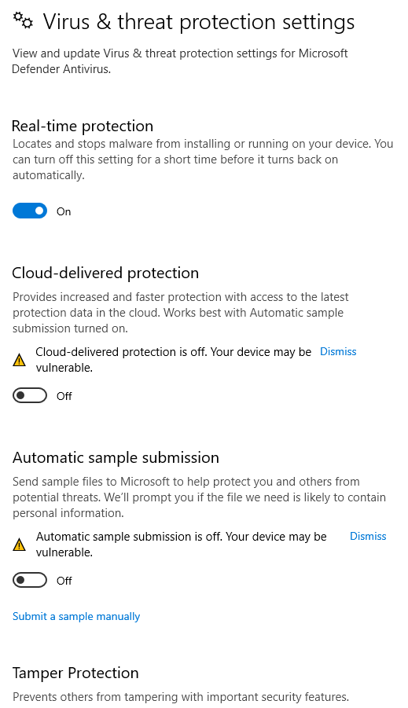
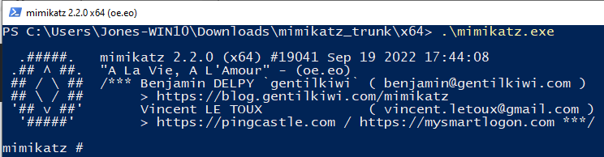
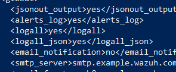
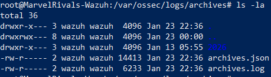
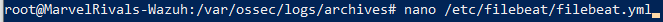
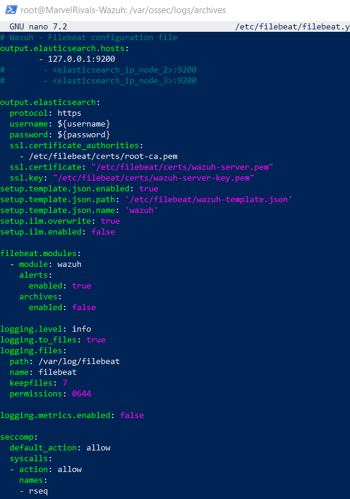
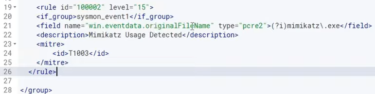
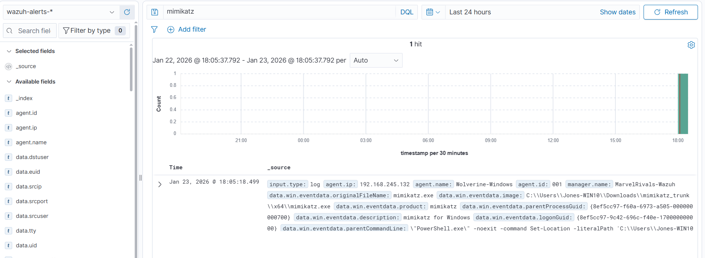
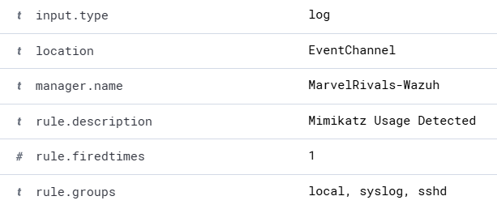

Configuring Sysmon telemetry, simulating attacks with Mimikatz, and creating custom detection rules in Wazuh.
Configuring the Windows VM to forward Sysmon logs to the Wazuh manager.
Set up agent communication with Wazuh manager
The ossec.conf file contains the configuration for how our agent talks to the Wazuh manager. We need to update the log location settings.
// ossec.conf agent configuration file
Apply the configuration changes
After changing the log location, open the Services app (search "services" in the Windows search bar), find the Wazuh service, and restart it.

// Restarting the Wazuh service in Windows Services
Confirm Sysmon telemetry is flowing
After a few minutes, refresh Wazuh on your local machine and go to Explore → Discover. Type "sysmon" in the search to see if logs are coming through.
// Sysmon logs appearing in Wazuh Discover
Disabling Windows Defender and running Mimikatz to generate telemetry.
Allow Mimikatz to run for testing
To generate Mimikatz telemetry in our lab environment, we need to temporarily disable Windows Defender on the Windows VM.
Go to Virus & threat protection settings and disable the protection features:
// Disabling Windows Defender for lab testing
Execute the credential dumping tool
Run Mimikatz on the Windows VM to simulate a credential dumping attack. This will generate telemetry that Wazuh can detect.
// Mimikatz execution on Windows VM
Configuring Wazuh to capture all logs and archive them.
Capture complete telemetry data
In the Wazuh manager's configuration file, we need to change logall and logall_json to "yes" to capture all events:

// Changing logall settings in ossec.conf
// logall_json set to yes
Apply configuration changes
Since we made changes to the .conf file, we need to restart the Wazuh manager service:
systemctl restart wazuh-manager
// Restarting Wazuh manager service
Confirm logs are being archived
Check that the generated logs are being stored properly:
// Generated logs being stored in archives
Enable archive ingestion
Edit the Filebeat configuration to enable archive processing:
// Running nano to edit filebeat.yml
// Filebeat.yml configuration file
Under filebeat.modules, change archives from enabled: false to enabled: true:
// Setting archives: enabled: true
Apply Filebeat changes
systemctl restart filebeat
// Restarting Filebeat service
Building a custom Wazuh rule to detect Mimikatz execution.
Create rule to detect Mimikatz
In Wazuh, I added a custom rule that detects Mimikatz execution based on process creation events:
// Custom Wazuh rule for Mimikatz detection
Run Mimikatz again to trigger the alert
Let's run Mimikatz again on the Windows VM to see if it triggers our custom rule in Wazuh.
After running Mimikatz, we can see the rule we created got a hit on the Mimikatz execution:
// Alert triggered! Mimikatz execution detected
View the detection description
Here is the description we created for the alert, showing the details of the detected activity:
// Detailed alert description for Mimikatz detection
Summary of Part 3 and what's coming next.
Building the automation pipeline
In the final part of this series, we'll build an end-to-end automation pipeline using Shuffle. We'll enrich alerts with VirusTotal, create cases in TheHive, and set up email notifications for SOC analysts.